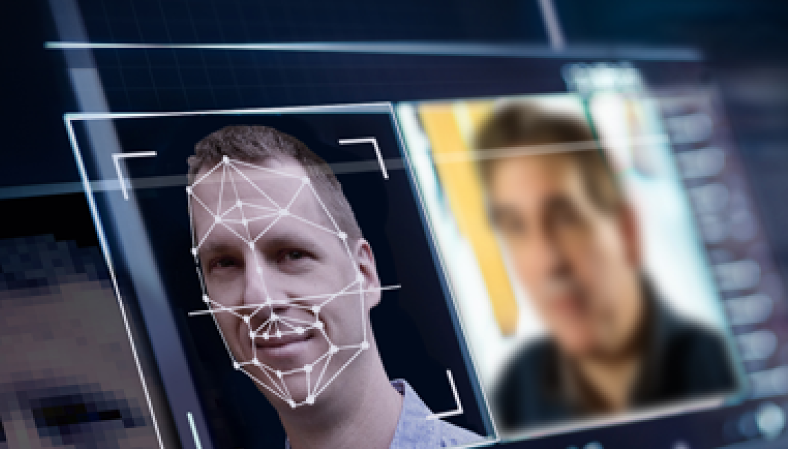
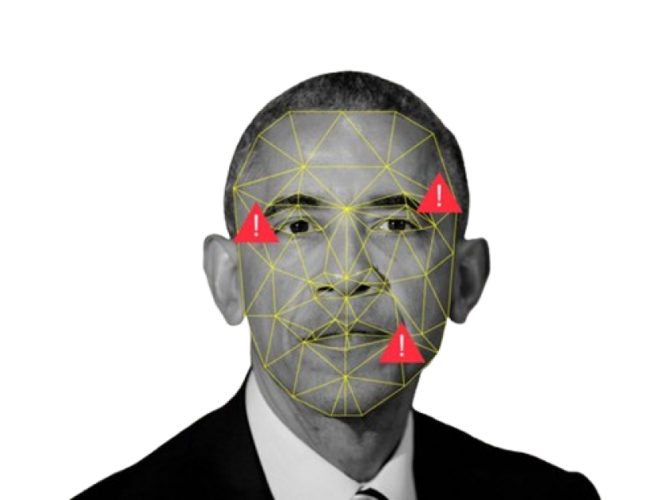
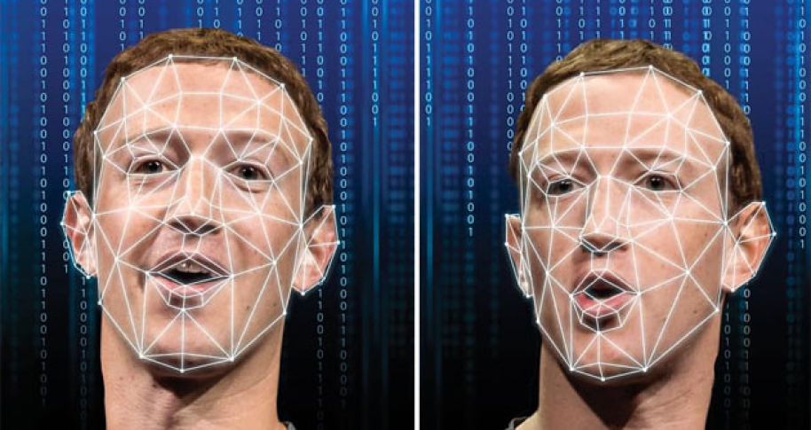
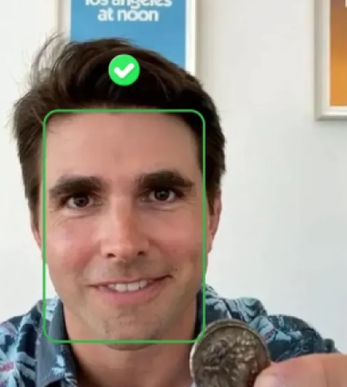
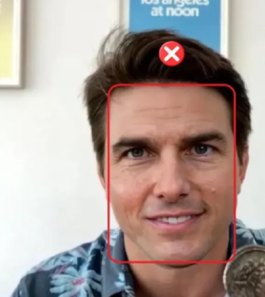
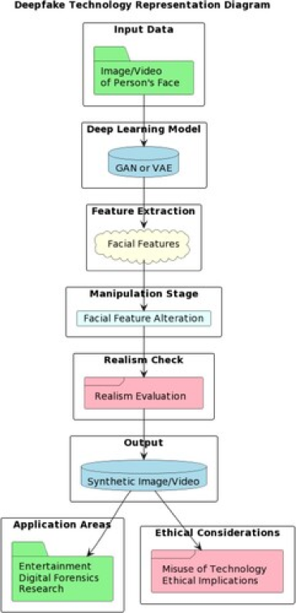

WHAT IS
DEEPFAKE?
Deepfake refers to the use of “deep learning” and “fake” techniques to
create hyper-realistic videos of individuals appearing to say or do things
that never occurred. It is a synthetic approach for replacing a person in an
existing image or video with someone else's characteristic or likeness
by relying on machine learning algorithms, particularly Generative
Adversarial Networks (GANs) (Seow et al., 2022; Westerlund, 2019).
When employed maliciously, deepfakes can have a negative impact on political
and social dynamics, such as eroding trust in institutions, harming the
reputation of notable persons, and influencing public opinion (Seow et al.,
2022). Deep fakes can also be lip-syncing or puppeteers, depending on how
the material is generated using artificial intelligence. Deep fakes with lip
sync are videos in which the mouth motions match the soundtrack (Ahmed et
al., 2022). Furthermore, Puppet-master deep fakes are videos of puppets
monitoring the face mask motions, actions, and head movements of a grand in
front of a photographic camera, Deepfake technologies frequently require a
large amount of image and video data to train the design of recognizable
picture-realistic images and videos. (Ahmed et al., 2022).
Sources :
Seow et al. (2022) :
Seow, J. W., Lim, M. K., Phan, C. W., & Liu, K. (2022, October 3). A comprehensive overview of Deepfake: Generation, detection, datasets, and opportunities. Science Direct. https://www.sciencedirect.com/science/article/abs/pii/S0925231222012334
Westerlund (2019) : https://timreview.ca/article/1282
Ahmed et al. (2022) :
S. R. Ahmed, E. Sonuç, M. R. Ahmed and A. D. Duru, "Analysis Survey on Deepfake detection and Recognition with Convolutional Neural Networks," 2022 International Congress on Human-Computer Interaction, Optimization and Robotic Applications (HORA), Ankara, Turkey, 2022, pp. 1-7, doi: 10.1109/HORA55278.2022.9799858.

How It Started
The term came to be used for synthetic media in 2017 when a Reddit moderator
created a subreddit called “deepfakes” and began posting videos that used
face-swapping technology to insert celebrities’ likenesses into existing
pornographic videos (Payne, 2024). However, the concept of deepfakes (or
deepfaking) can be traced back to efforts starting in the 1990s, when
researchers used CGI in attempts to create realistic images of humans. The
technology gained traction in the 2010s, when the availability of large
datasets, developments in machine learning, and the power of new computing
resources led to major advances in the field. The open-source deepfake
creation tools have been tested and refined by legions of hobbyists, who
have utilized these tools for purposes of benign entertainment (memes,
swapping out actors’ faces in classic movies) and more sinister, appalling
goals, like the creation of deepfake pornography. It was the participation
and driving interest of everyday users, beginning in 2017, that has brought
the technology to where it is now. (Regan, 2024).

Deepfake technology uses machine learning, particularly Generative
Adversarial Networks (GANs), to create fake but realistic videos or images.
The process begins by training a model with large amounts of data, such as
pictures or videos of a person. This helps the model learn the person’s
facial features, expressions, and movements. Once trained, the model can
replace someone’s face in a video or change their expressions, creating a
new, synthetic version of the video (Yu et al., 2021).
These deepfake videos often look very real, but they might have subtle
flaws. For example, the face may not match the body perfectly, or there
could be unnatural movements. These signs can sometimes help identify
deepfakes, although the technology has improved so much that it’s becoming
harder to spot them. Despite these advancements, inconsistencies in how the
face moves or interacts with the rest of the body can still give deepfakes
away (Yu et al., 2021).
How It Is Made



The obvious reason for the problem is that deepfakes can deceive humans.
Even if viewers are not tricked by a deepfake, they may become unsure if
their content is authentic or not. Uncertainty is very different from
ambivalence. Ambivalence occurs when people are faced with a decision on
which they have opposing views, and "additional information only
heightens the internalized conflict. In contrast, uncertainty occurs when
there is not enough knowledge to make a decision, and it can be resolved by
the introduction of fresh information (Alavrez & Brehm, 1997, as cited
in Vaccari & Chadwick, 2020) . According to Downs (1957), citizens
experience uncertainty because the costs for gaining precise information are
prohibitively pricey. Deepfakes may raise the price of obtaining reliable
information, resulting in greater uncertainty. Thus, we investigate whether
deceptive deepfakes create confusion about the information they contain.
Global Urgency
The World of Deepfake
Demonstrations
Threats & Recommendations
Home
About Us
Sources: